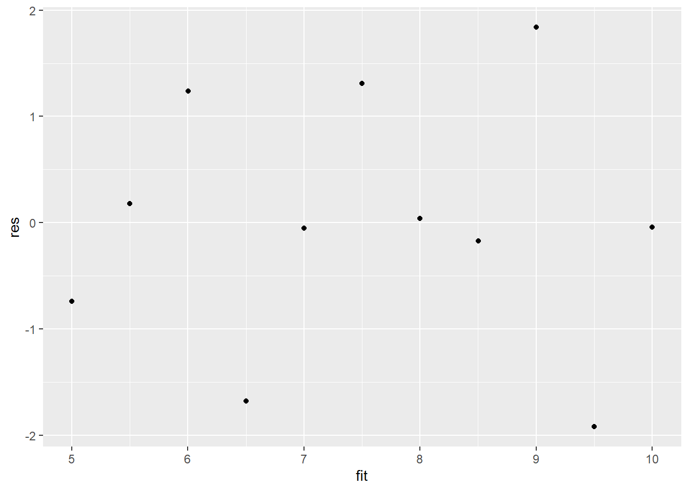
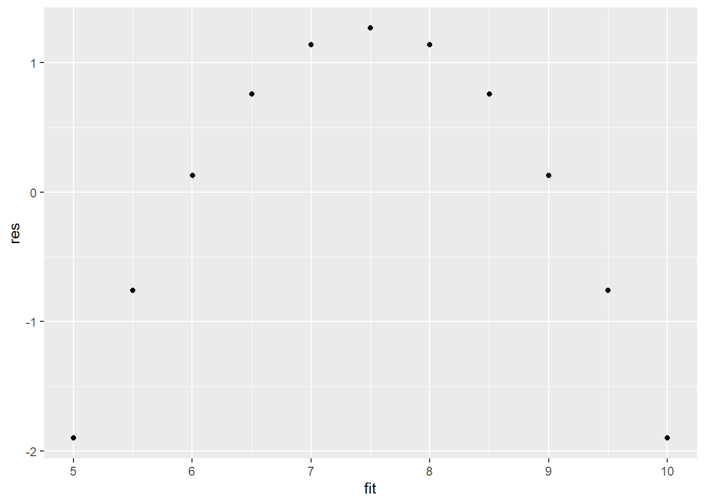
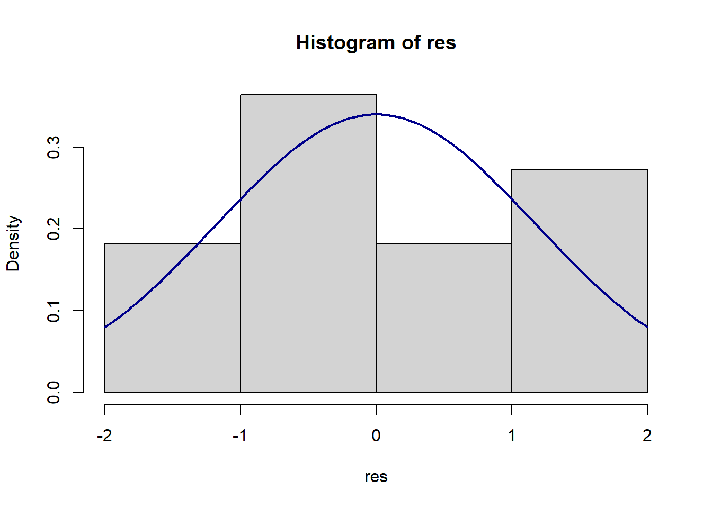

Chapter 1 Linear Regression - Part I
1.1 R Packages Used in this Chapter
Base R has a great deal of functionality, but the real power of R is that thousands of people developing packages that expand the capabilities of R. In his chapter we will be using the following packages.
tidyverseThe tidyverse is an opinionated collection of R packages designed for data science. All packages share an underlying design philosophy, grammar, and data structures (see https://www.tidyverse.org/).RmiscThe Rmisc library contains many functions useful for data analysis and utility operations (see https://cran.r-project.org/web/packages/Rmisc/index.html).psychA general purpose toolbox for personality, psychometric theory and experimental psychology (see https://cran.r-project.org/web/packages/psych/index.html)
The following code chunk test weather each package has been installed, installs the package if needed, and then loads the package.
if (!require("tidyverse")) install.packages("tidyverse")
library(tidyverse)
if (!require("Rmisc")) install.packages("Rmisc")
library(Rmisc)
if (!require("psych")) install.packages("psych")
library(psych)install.packages() command installs the package and the library() command loads the package. For now, you can copy this code and paste this code to use it in your own analysis.
1.2 Assumptions of the Classical Linear Regression Model
- The dependent variable is linearly related to the coefficients of the model and the model is correctly specified.
- The mean of the error term is zero.
- The error term is normally distributed. (Not absolutely necessary)
- No perfect multicollinearity. No independent variable has a perfect linear relationship with any of the other independent variables.
- The error term has a constant variance. No heteroscedasticity.
- The error terms are uncorrelated with each other. No autocorrelation or serial correlation.
- The independent variable(s) is/are uncorrelated with the equation error term.
In this chapter, we will focus on the first three assumptions, and we will discuss an important model diagnostic tool, the residual vs. fit plot.
1.3 Assumption 1. Linearity
To use linear regression, the relationship we are studying must be linear. Duh, right? But is is a very common mistake to assume linearity without checking. The best way to check is to plot the data using scatter plots. Let’s use a famous data set known as Anscombe’s Quartet as an example of identifying linear and non linear relationships. Anscombe’s Quartet is a set of four pairs of x/y data that all yield identical regression output.
Look at the summary statistics fro Anscombe’s Quartet.
The data() command loads built in R data sets. R has several built in data sets for learning R. data("anscombe") loads Anscombe’s Quartet.
The describe() command is from the psych package. You will sometimes see this indicated in documentation as follows: psych::describe() it does a nicer job of presenting summary statistics. The arguments skew and ranges are bothe set to false to keep the output simple.
Notice that the summary statistics fore each of the x’s and for each of the y’s are nearly identical. Now let’s look at the output from linear regression of the first and second x/y’s of the data set. In R, the lm() command is used to estimate linear regression models. The “lm” stands for linear model.
lm() is used to fit linear models. The first argument is the formula. the dependent variable is listed first followed by a ~, i.e. a tilde. Then the independent, or predictor, variables are listed. The + (plus) sign is used to separate each independent variable. Note that the output of lm() is not very useful. You need to store the linear model in an object and then use the summary() to display the regression output.
Notice that the regression output for the first set of x/y’s is nearly identical to the second x/y’s, but before we draw any conclusions, let’s check that relationships are linear. We will do this by first plotting a scatter plot of x vs y for each pair. Then we will plot the residue vs fit plot.
To plot a scatter plot of x vs y for each pair we will use a tool from the tidyverse called ggplot.
To plot a scatter plot of x vs y for each pair we will use a tool from the tidyverse called ggplot.
1.4 Asumption 2: Mean of the residules.
First exam the summary statistics of the residuals. Both the mean and the median should be very close to zero. Recalling the first of Anscombe’s Quartet.
## Min. 1st Qu. Median Mean 3rd Qu. Max.
## -1.92127 -0.45577 -0.04136 0.00000 0.70941 1.83882The mean and median of the residuals for the first of Anscombe’s Quartet looks good, but lest look at the second of the quartet.
## Min. 1st Qu. Median Mean 3rd Qu. Max.
## -1.9009 -0.7609 0.1291 0.0000 0.9491 1.2691Notice that the mean is zero, which is good, but the median is larger. While this is not a conclusive model diagnostic, it does trigger a red flag. Let’s examine the residuals vs. fit plot. We can see that that in Plot 1 the residuals are randomly spread around zero, but Plot 2 shows obvious pattern. In the case of the the second set of x/y pairs in Anscombe’s Quartet, the issue is that the relationship is non-linear.
Plot 1 
Plot 2 
We can also use the standard error of regression, or what R calls the Residual standard error. The following function draws a little fancier residual vs. fit plot. It plots shaded regions corresponding to one and two standard errors of regression above and below zero. Most of the residuals should be within one standard error of regression plus or minus zero and nearly all residuals should be within plus or minus two standard error of regression of zero.
1.5 Asumption 2: Normally distributed residuals
Plot 1 
Plot 2